Approach

Generative Adversarial Networks (GANs) learn patterns and structures from the real data and harnesses this information to create novel data (Goodfellow et al., 2014) . We have trained a Generative Adversarial Network (GAN) to produce novel protein sequences and optimize the sequences to contain desired structural properties.
